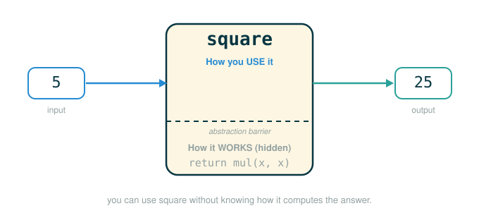

1.3 Defining New Functions: Local Names, Abstraction, and Operators
You already know how to define a function. This lesson is about three ideas that decide whether the functions you write are easy or painful to reason about.
By the end you will be able to do four things. You will explain why the parameter names inside a function are private to that function and invisible to the outside world. You will choose names that make a reader trust a function without reopening its body. You will use a function as an abstraction — a sealed box you can rely on by its name and behavior alone. And you will see that the arithmetic operators you have been typing, like + and //, are really just a compact spelling for ordinary function calls.
The thread tying all of this together is one question that comes up constantly once programs get bigger: when I look at a name, where does it live, and who is allowed to see it?
An Analogy: A Recipe Card and Its Scratch Paper
Picture a chef working from a recipe card. The card says "beat the eggs until the mixture doubles." To carry that out, the chef grabs a piece of scratch paper, scribbles a timer, notes "mixture looks pale," and crosses things off as they go.
When the dish is done, the scratch paper goes in the trash. The next cook who picks up the same recipe card does not inherit your scribbles. They start with their own blank scratch paper. The recipe card — the public, reusable thing — never mentions your private notes at all.
A function works exactly like this. The recipe card is the function: a public name and a described behavior that anyone can use. The scratch paper is the function's local frame: the parameters and any helper names it creates while it runs. Those local names are real and useful while the call is happening, and then they are gone. They never leak back onto the recipe card, and a second call gets fresh scratch paper of its own.
Hold onto two consequences of this picture, because the rest of the lesson is built on them. First, because the scratch paper is private, the name you scribble on it does not matter to anyone outside — you could call your timer note t or egg_timer and the finished dish is identical. Second, because the recipe card is public, the name on the card matters enormously: it is the only thing the next cook reads before deciding to trust it.
Local Names Are Private to One Call
When a function is called, Python builds a fresh local frame for that call. Every name created during the call — the formal parameters, plus anything the body assigns — lives in that frame and nowhere else.
A direct consequence is that the implementer's choice of parameter name is not part of the function's meaning. These two definitions of square are interchangeable:
# (1)
from operator import mul
def square(x):
return mul(x, x)
# (2)
from operator import mul
def square(y):
return mul(y, y)
The first writes its parameter as x and the second writes it as y, but both describe the same behavior: take the argument, multiply it by itself, return the product. A caller cannot tell them apart, because a caller only ever sees the result:
square(5) -> 25The name x (or y) is a local name. It is a placeholder that exists only inside the body, only while that particular call is running. The principle here is that the meaning of a function should be independent of the parameter names chosen by its author, and that is exactly why the names are kept local to the body in the first place.
Read a local name with this sentence in your head:
This name exists for this call, while this call is active.Why "Out of Scope" Is a Real Rule, Not a Quirk
The region of a program where a name is visible is called its scope. The scope of a local name is limited to the body of the user-defined function that defines it. When the call ends and that name can no longer be reached, we say it is out of scope.
This is worth slowing down on, because it explains an error you will hit. Here is a small function that uses a local helper name, difference, to make its body easier to read:
# (3)
def percent_difference(x, y):
difference = abs(x - y)
return 100 * difference / x
Inside the body, difference holds the absolute gap between x and y, and the function reports that gap as a percentage of x. Now watch what happens if you try to use difference after the call:
# (4)
def percent_difference(x, y):
difference = abs(x - y)
return 100 * difference / x
result = percent_difference(40, 50)
difference
The last line raises a NameError. The name difference was created in the local frame for the call to percent_difference, and that frame is gone once the call returns. In the global frame, difference was never bound, so it is out of scope. The value that survives is result, because the function handed its return value back to the caller — but the private helper name did not come along.
This is not Python being forgetful. It is Python protecting each call's scratch paper. If every local name leaked into the global frame, helper names from one function could silently collide with helper names from another, and large programs would become impossible to reason about. Local scope keeps temporary work contained.
Walking the Frames of percent_difference
Trace percent_difference(40, 50) by hand, watching where each name lives.
The call opens a local frame and binds the parameters:
x -> 40
y -> 50The first line of the body assigns a local name:
difference = abs(40 - 50)
= abs(-10)
= 10The return line uses those local names to compute the result:
return 100 * difference / x
= 100 * 10 / 40
= 1000 / 40
= 25.0So the call evaluates to 25.0. After it returns, here is the state of the world:
Global frame
percent_difference -> function percent_difference(x, y)
result -> 25.0
(local frame for percent_difference is gone)
x -> 40 these lived only in the call
y -> 50
difference -> 10The global frame keeps percent_difference (the function) and result (the returned value). It does not keep x, y, or difference. Those were on the scratch paper.
Follow the Line: Looking Up a Name Versus a NameError
When Python evaluates a bare name, it looks that name up in the current environment. Here is the successful lookup of result in the global frame:
result
├─ result ........ look up the name in the current environment
├─ found ......... bound in the global frame to 25.0
└─ evaluates to 25.0And here is the failing lookup of difference from the global frame, after the call has returned:
difference
├─ difference .... look up the name in the current environment
├─ search ........ not bound in the global frame
├─ search ........ the local frame that bound it is gone (out of scope)
└─ evaluates to NameError: name 'difference' is not definedThe two lines look almost identical. The only difference is which frame each name lives in, which is the whole point of scope.
Choosing Names That Teach the Reader
Because parameter names are private, beginners sometimes conclude that names do not matter. The opposite is true: names are one of the most important tools you have for writing programs a human can read. Python will accept almost any name, but you are writing for the next person as much as for the machine, and good names are a gift to that person.
The original text gives concrete naming guidelines worth internalizing:
1. Function names are lowercase, with words separated by underscores.
Descriptive names are encouraged.
2. Function names typically evoke operations applied to arguments by the
interpreter (e.g., print, add, square) or the name of the quantity that
results (e.g., max, abs, sum).
3. Parameter names are lowercase, with words separated by underscores.
Single-word names are preferred.
4. Parameter names should evoke the role of the parameter in the function,
not just the kind of argument that is allowed.
5. Single letter parameter names are acceptable when their role is obvious,
but avoid "l" (lowercase ell), "O" (capital oh), or "I" (capital i) to
avoid confusion with numerals.Guideline 4 is the heart of it. A parameter name should tell the reader what role the value plays, not merely what type it is. Compare two versions of the same computation:
# (5)
def f(x, y):
z = abs(x - y)
return 100 * z / x
# (6)
def percent_difference(original, changed):
difference = abs(original - changed)
return 100 * difference / original
Python runs both identically. But version (6) carries meaning. A reader who has never seen the body can still guess what percent_difference(original, changed) is for, because every name announces its role. Version (5) forces the reader to mentally execute the body just to recover that meaning. The rule is not "longer names are always better"; it is "use names that reveal the role of the value."
Functions as Abstractions
This is where local names and good names meet. An abstraction hides details behind a name so you can use an idea without reopening its implementation. A well-named function is exactly that: a sealed box.
The original text puts it plainly. The users of a function may not have written it themselves, but may have obtained it from another programmer as a "black box." A programmer should not need to know how a function is implemented in order to use it. If you know the name and the behavior, you are done.
Picture that black box with a line drawn through it: above the line is everything you need to use square, and below it is the implementation you are free to ignore.

Concretely, once square exists, you should be able to read:
# (7)
square(12)
and immediately understand that the result is:
144without rereading the body of square every single time. The name square is doing real work: it lets you reason at the level of "the square of twelve" instead of "multiply twelve by itself using mul." If the identical body were named banana, the machine would still compute 144, but the human reader would lose the entire benefit of the abstraction. The local scope makes the box sealed; the good name makes the box trustworthy.
The Box Depends on Behavior, Not Implementation
To feel how strongly the box hides its contents, look at two versions of square whose bodies are not just renamed but genuinely different. The first multiplies the argument by itself, exactly as you would expect:
# (8)
from operator import mul
def square(x):
return mul(x, x)
The second computes the same number by a stranger route — it multiplies x by x - 1 and then adds one more x:
# (9)
from operator import mul
def square(x):
return mul(x, x-1) + x
These are not the trivial x-versus-y rename from earlier; the two bodies do different arithmetic. Yet they agree on every input, because . Trace the value 4 through each to see it:
first body: mul(4, 4) = 16
second body: mul(4, 3) + 4
= 12 + 4 = 16From the outside, square(4) is 16 either way, and a caller has no means to discover which body ran. This is the real lesson of abstraction: a function is defined by its behavior, not by its implementation. Any function that computes the square is equally good, because the only thing that escapes the box is the returned value. Whichever body you pick, the name square keeps its promise, so code that uses square does not care which one is installed.
Domain, Range, and Intent
If a function is used by its behavior alone, then "behavior" is the thing you have to pin down precisely. The original text names three attributes that, taken together, capture everything a caller needs to know about a functional abstraction:
- The domain of a function is the set of arguments it can take.
- The range of a function is the set of values it can return.
- The intent of a function is the relationship it computes between inputs and output (as well as any side effects).
Notice what is and is not on that list. Domain and range fix what kinds of values go in and come out; intent fixes the relationship between them. None of the three mentions how the work is done — the body is deliberately left out, which is exactly what makes these three the public face of the box.
Spell them out for square:
- Domain: any single real number. You may hand
squareone number, and any real number is allowed. - Range: any non-negative real number. A real number times itself is never negative, so nothing below zero can ever come back.
- Intent: the output is the square of the input.
Those three lines describe both bodies above equally well, which is the whole point: they are a contract that the implementation must honor, and either version of square honors it. When you reach for a function someone else wrote, ask these same three questions — what may I pass in, what can come back, and what relationship connects them — and you can use the function correctly without ever opening it.
Operators Are Function-Like Syntax
Here is the surprising payoff. The arithmetic you have been writing with symbols is, underneath, the same call expressions you just studied.
Mathematical operators such as + and - were your first example of a method of combination, but Python has not yet been given an evaluation procedure for expressions built from them. The procedure is simple: treat an operator expression as shorthand for a function call. Start with addition:
# (10)
2 + 3
This evaluates to:
5You can read 2 + 3 as short-hand for a call to the add function from the operator module:
# (11)
from operator import add
add(2, 3)
which also produces:
5So + is an operator: it is built into Python's expression grammar. add is an ordinary function called with the usual name(arg, arg) shape. The two forms are different spellings of one operation:
2 + 3 operator form
add(2, 3) function-call formThe connection matters because it tells you operators are not magic. They are compact syntax for common functions, and they obey the same evaluation rules.
Operator Precedence Is Nested Calls
Because operators are just calls, an expression with several of them is just calls nested inside calls — and Python's precedence rules decide the nesting. Multiplication binds tighter than addition, so:
# (12)
2 + 3 * 4 + 5
evaluates to:
19That is the same result as writing the nesting out by hand with add and mul:
# (13)
from operator import add, mul
add(add(2, mul(3, 4)), 5)
which also gives:
19Read the call form from the inside out to see why. The innermost call mul(3, 4) produces 12. The next call add(2, 12) produces 14. The outer call add(14, 5) produces 19. Precedence is nothing more than the rule that decided 3 * 4 becomes the inner call instead of 2 + 3.
Parentheses let you override that nesting. Grouping the additions first:
# (14)
(2 + 3) * (4 + 5)
evaluates to:
45which matches the explicitly nested calls:
# (15)
from operator import add, mul
mul(add(2, 3), add(4, 5))
also producing:
45Here the parentheses forced add(2, 3) and add(4, 5) to be the inner calls, and mul to be the outer one: mul(5, 9) is 45. Whenever an arithmetic expression looks tangled, rewrite it as nested calls and evaluate from the inside out.
Follow the Line: Evaluating the Precedence Example
Trace 2 + 3 * 4 + 5 as the nested calls it stands for:
2 + 3 * 4 + 5
├─ 3 * 4 ............... innermost call mul(3, 4) -> 12
├─ 2 + 12 ............. next call add(2, 12) -> 14
├─ 14 + 5 ............. outer call add(14, 5) -> 19
└─ evaluates to 19Each branch is one completed call feeding the next, exactly as Python's precedence dictates.
True Division and Floor Division
Division comes in two flavors, and they are also operators backed by functions. The / operator performs true division and produces a floating-point (decimal) value — even when the divisor evenly divides the dividend:
# (16)
5 / 4
Result:
1.25# (17)
8 / 4
Result:
2.0Notice that 8 / 4 is 2.0, not 2. True division always hands back a float.
The // operator performs floor division: it rounds the result down to an integer.
# (18)
5 // 4
Result:
1The word floor comes from the floor function in mathematics. For positive numbers, floor division moves down to the nearest whole number:
This is not rounding to the nearest integer. It moves down. That distinction is invisible until you reach a negative number:
# (19)
-5 // 4
Result:
-2The exact quotient is , and the floor is the next integer below it, which is . Many students expect -1 here because everyday language treats "drop the decimal" as the same thing as floor division. That shortcut works for positive numbers and fails for negatives. The number line makes it concrete:
... -3 -2 -1 0 1 ...
^
floor of -1.25The floor is the greatest integer that is less than or equal to the exact quotient. Since -1 is greater than -1.25, it is too high; the floor is -2.
The Operator Forms of Division
Just as + is shorthand for add, the two division operators are shorthand for the truediv and floordiv functions:
# (20)
from operator import truediv, floordiv
truediv(5, 4)
Result:
1.25# (21)
from operator import truediv, floordiv
floordiv(5, 4)
Result:
1So 5 / 4 and truediv(5, 4) are the same operation written two ways, and likewise 5 // 4 and floordiv(5, 4). The operator form is the compact spelling; the function form makes the underlying call visible.
▶Step-Through Checkpoint
This block is the lesson's capstone: it defines what it calls, mixes assignment statements with a function call, and ends on a bare final line. Because it mixes a function call with assignments, it is a good place to watch local scope appear and disappear in an environment diagram of the run. Before you step through it, write down three predictions: how many local frames will open over the whole run, every name the global frame will hold when the last line finishes, and whether that final line adds a new binding.
# (22)
from operator import floordiv, truediv
def percent_difference(original, changed):
difference = abs(original - changed)
return 100 * difference / original
answer = percent_difference(40, 50)
quotient = floordiv(5, 4)
exact = truediv(5, 4)
answer
Step through it one line at a time and check each prediction. Only one local frame opens: percent_difference is the only user-defined function here, and abs, floordiv, and truediv are built-ins that open no frames. While the call is active, that frame holds original -> 40, changed -> 50, and difference -> 10; when the call returns, it disappears and those names go out of scope. The global frame settles with six names: percent_difference, floordiv, truediv, answer bound to 25.0, quotient bound to 1, and exact bound to 1.25. The name difference is nowhere, because it lived only on the call's scratch paper, and the final line binds nothing — a bare name is an expression, not an assignment.
⚠Common Beginner Traps
- Looking for a local name in the global frame. The local frame that created it is gone after the call returns, so Python raises a
NameError. Always ask: which frame was this name created in? - Believing parameter names matter to the caller. They do not.
def square(x)anddef square(y)describe the same behavior; only the body's consistency matters. - Concluding that names do not matter at all. Parameter names are private, but the function name and well-chosen parameter names are how a reader trusts the abstraction.
- Reopening a function's body every time you use it. The point of an abstraction is that the name and behavior are enough; treat a good function as a black box.
- Expecting
/to give an integer. True division always returns a float, so8 / 4is2.0, not2. - Treating
//as ordinary rounding. Floor division moves down, so-5 // 4is-2, not-1. - Thinking operators are a separate kind of magic.
+,*,/, and//are shorthand for theadd,mul,truediv, andfloordivfunctions.
✓Check Your Understanding
- Why do
def square(x): return mul(x, x)anddef square(y): return mul(y, y)behave identically? - Consider
def tip(bill, rate): gratuity = bill * rate; return bill + gratuity. After runningtotal = tip(20, 0.2), what doestotalhold, and what happens if the next line is a baregratuity? - Guideline 4 says a parameter name should evoke the role of the parameter. Why does that help the next reader more than a name that just states the type?
- What does it mean to treat a function as a black box, and how do local names make that possible?
- Rewrite
2 + 3 * 4 + 5as nestedaddandmulcalls, and explain what decided the nesting. - What is the value of
8 / 4, what is the value of5 // 4, and why is-5 // 4equal to-2rather than-1?
Show the answers
- Parameter names are local placeholders with no meaning outside the body. Both definitions describe the same behavior — multiply the argument by itself — so a caller, who only sees the result, cannot tell them apart.
totalholds24.0, the value the call returned to the global frame. The baregratuityraises aNameError, becausegratuitywas bound only in the local frame for the call totip; that frame is gone once the call returns, so the name is out of scope and was never bound in the global frame.- The type only tells you what is allowed in; the role tells you what the value means in this computation, which is what a reader needs to predict behavior without executing the body.
- A black box is something you use by its name and behavior without knowing its implementation. Local names keep the function's internal helpers private, so nothing inside the box leaks out and you can rely on it from the outside alone.
add(add(2, mul(3, 4)), 5), which evaluates to19. Precedence made3 * 4the innermost call because multiplication binds tighter than addition.8 / 4is2.0because true division always returns a float;5 // 4is1;-5 // 4is-2because floor division takes the greatest integer less than or equal to the exact quotient-1.25, and that integer is-2.
§Summary
Every function call runs inside its own local frame, and the names created there — the parameters and any helpers — are private to that call. Their scope is the function body, so they go out of scope the moment the call returns, which is why reaching for a local name from the outside raises a NameError. Because parameter names are private, the implementer is free to choose them, but the function name and well-chosen parameter names are exactly what let a reader treat the function as a trustworthy abstraction — a black box used by name and behavior alone. Finally, the arithmetic operators are not a separate magic: +, *, /, and // are shorthand for the add, mul, truediv, and floordiv functions, nested arithmetic is just nested calls governed by precedence, and the two divisions differ in that / always returns a float while // floors the quotient downward.